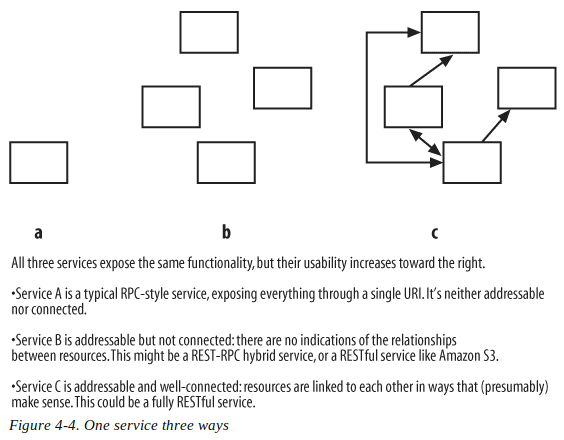

The Glory of REST
Theory

Source: www.redorbit.com
Web Service
A web service is an abstraction layer, like an operating system API or a programming language library.
RPC-Style Architectures
- envelope full of data
- HTTP and SOAP are envelope formats
- RPC-Style service defines it's own vocabulary
- RESTful WS share standard HTTP methods vocabulary
- REST Uniform Interface
RESTful - different URIs for different values
RPC-style - URI (service endpoint) for something that can be processed as a command
REST-RPC Hybrid Architectures
Web service between the RESTful web services and the purely RPC-style services
Few REST-RPC examples
- The del.icio.us API
- The "REST" Flickr web API
- Many other allegedly RESTful web services
- Most web applications
SOAP as a competitor to REST
The primary competitors to RESTful architectures are RPC architectures, not specific technologies like SOAP.
Richardson Maturity Model

Source: http://martinfowler.com
Level 0 - The swamp of POX
HTTP POST for all interactions
Level 1 - Resources
Distinct URL per object
Level 2 - HTTP Verbs
Rather than doing RPC style methods, we leverage HTTP
Level 3 - Hypermedia Controls
Self-describing API
So what is this REST thing?
REST simply dictates that a given resource have a unique address.
You can interact with that address with standard HTTP verbs.
State and Statelessness
Two types of state:
- application state - live on the client
- resource state - live on the server
Resource state stays on the server and is only sent to the client in the form of representations.
Application state stays on the client until it can be used to create, modify, or delete a resource. Then it's sent to the server as part of POST, PUT, or DELETE request, and becomes resource state.
RESTful service is "stateless" if the server never stores any application state.
This is where the name "Representational State Transfer" comes from.
Etags
ETags are used to compare entities from the same resource. By supplying an entity tag value in a conditional request header.
Resource-Oriented Basics
- different audience
- everything (interesting) thing represent as a resource
- representation of resources
- verbs, auxiliaries, complexity
TODO: add list
The Generic ROA Procedure
- Figure out the data set
- Split the data set into resources
- Name the resources with URIs
- Expose a subset of the uniform interface
- Design the representation(s) accepted from the client
- Design the representation(s) served to the client
- Integrate this resource into existing resources, using hypermedia links and forms
- Consider the typical course of events: what’s supposed to happen? Standard control flows like the Atom Publishing Protocol can help.
- Consider error conditions: what might go wrong? Again, standard control flows can help.
For each kind of resource:
Addressability
Representations Should Be Addressable
Connectedness
Uniform Interface
GET, PUT, and DELETE
POST
HEAD and OPTIONS
- Retrieve a metadata-only representation: HTTP HEAD
- Check which HTTP methods a particular resource supports: HTTP OPTIONS
PUT versus POST
Overloading POST
The real information may be in the URI, the HTTP headers, or the entity-body. However it happens, an element of the RPC style has crept into the service.
Safety and Idempotence
When correctly used, GET and HEAD requests are safe. GET, HEAD, PUT and DELETE requests are idempotent.
URI Desing
URIs are supposed to designate resources, not operations on the resources.
| Method | URI Template | Equivalent RPC Operation |
|---|---|---|
|
PUT |
users/{username} |
createUserAccount |
|
GET |
users/{username} |
getUserAccount |
|
PUT |
users/{username} |
updateUserAccount |
|
DELETE |
users/{username} |
deleteUserAccount |
|
GET |
users/{username}/profile |
getUserProfile |
|
POST |
users/{username}/bookmarks |
createBookmark |
|
PUT |
users/{username}/bookmarks/{id} |
updateBookmark |
|
DELETE |
users/{username}/bookmarks/{id} |
deleteBookmark |
|
GET |
users/{username}/bookmarks/{id} |
getBookmark |
|
GET |
users/{username}/bookmarks?tag={tag} |
getUserBookmarks |
|
GET |
{username}?tag={tag} |
getUserPublicBookmarks |
|
GET |
?tag={tag} |
getPublicBookmarks |
- Use commas when the order of the items matters, as it does in latitude and longitude: /earth/37.0,-95.2
- Use semicolons when the order doesn’t matter: /color-blends/red;blue
- When designing URIs, use path variables to separate elements of a hierarchy, or a path through a directed graph.
- Use query variables only to suggest arguments being plugged into an algorithm, or when the other two techniques fail.
Representations
Representations should be human-readable, but computer-oriented
Service Versioning
Even a well-connected service might need to be versioned
Security
HMAC
"Authorization: AWS " + AWSAccessKeyId+ ":" +
base64(hmac-sha1(VERB + "\n" +
CONTENT-MD5 + "\n" +
CONTENT-TYPE + "\n" +
DATE + "\n" +
CanonicalizedAmzHeaders + "\n" +
CanonicalizedResource))
Authorization: AWS 44CF9590006BF252F707:jZNOcbfWmD/A/f3hSvVzXZjM2HU=JSON or XML
JSON
If all you want to pass around are atomic values or lists or hashes of atomic values, JSON has many of the advantages of XML: it’s straightforwardly usable over the Internet, supports a wide variety of applications, it’s easy to write programs to process JSON, it has few optional features, it’s human-legible and reasonably clear, its design is formal and concise, JSON documents are easy to create, and it uses Unicode.
If you’re writing JavaScript in a web browser, JSON is a natural fit. The XML APIs in the browser are comparitively clumsy and the natural mapping from JavaScript objects to JSON eliminates the serialization issues that arise if you’re careless with XML.
One line of argument for JSON over XML is simplicity. If you mean it’s simpler to have a single data interchange format instead of two, that’s incontrovertibly the case. If you mean JSON is intrinsically simpler than XML, well, I’m not sure that’s so obvious. For bundles of atomic values, it’s a little simpler. And the JavaScript APIs are definitely simpler. But I’ve seen attempts to represent mixed content in JSON and simple they aren’t.
XML
XML deals remarkably well with the full richness of unstructured data. I’m not worried about the future of XML at all even if its death is gleefully celebrated by a cadre of web API designers.
I look forward to seeing what the JSON folks do when they are asked to develop richer APIs. When they want to exchange less well strucured data, will they shoehorn it into JSON? I see occasional mentions of a schema language for JSON, will other languages follow?
I predict there will come a day when someone wants to federate JSON data across several application domains. I wonder, when they discover that the key "width" means different things to different constituencies, will they invent namespaces too?
JSON and Hypermedia
- HAL Media Types
- HAL and Links
- HAL and Resources
- HAL Embedded Resources
Error handling
Why Status Codes Aren’t Enough?
A status code simply isn’t enough information most of the time. Yes, you want to define standard status codes so that your clients can perform reasonable branching, but you also need a way to communicate details to the end-user, so that they can log the information for themselves, display information to their own end-users, and/or report it back to you so you can do something to resolve the situation.
Sources
THE END
Sławomir Chrobak / @schrobak
Link to presentation: http://schrobak.github.io/slides/tgor